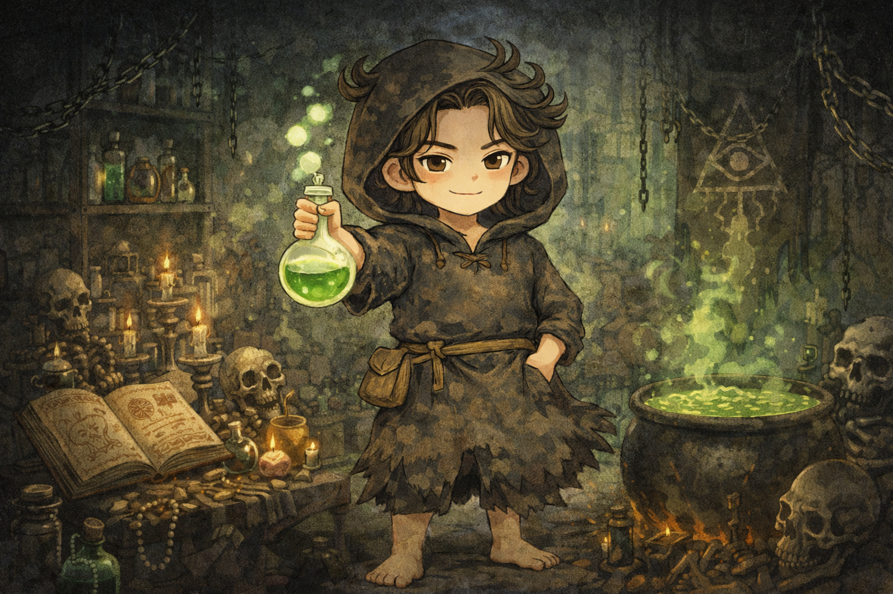

異端の錬金術師
The Heretic Alchemist

既成概念の破壊こそが生きがい。
誰も見たことのない景色を見るためなら、社会的なタブーや安定を平気で犠牲にする。
あなたの4つの軸
あなたの体験資本のかたち

キャラクター特徴
既成概念の破壊こそが生きがい。誰も見たことのない景色を見るためなら、社会的なタブーや安定を平気で犠牲にする。
強み
独創性、破壊的イノベーション、精神的自由、本質を見抜く目、没入力
副作用
社会的不適合、協調性の欠如、現実逃避、責任感の欠落、孤立
体験から分かるあなたの性格
あなたは人生において、常に未知なる「実験」を繰り返してきました。皆が通る安全な舗装路をあえて外れ、怪しい裏道や未踏の地へ進むことに、何にも代えがたい興奮を覚えるタイプです。その選択によって、誰にも真似できない独自の視座や発想を手に入れてきましたが、同時に「普通の感覚」や「共通の前提」からも遠ざかっていったのではないでしょうか。気づけば、理解者は少数で、孤高という言葉が似合う場所に立ちながらも、ふとした瞬間に強い孤立感を覚えることがあるかもしれません
体験の傾向
探究癖（仕組みや前提を疑う）／更新欲求（同じ状態を続けられない）／独自解釈（人と違う答えを出す）／集団距離（同調を避けがち）
人生に影響を与えた体験
社会的なレールから外れたとき、不安よりも先に「これで自由だ」という強烈な解放感を覚えた瞬間はありませんか。皆が進む方向から一歩外れただけで、世界の音が急に静かになり、呼吸がしやすくなった感覚。それまで背負っていた「こうあるべき」という重さが、ふっと消えたように感じたことがあるかもしれません。あるいは、周囲から「理解不能だ」「意味がわからない」と切り捨てられた奇妙なアイデアを、あきらめずに形にした経験。少数ではあっても、そこに強く共鳴する人々が現れ、熱狂的な支持が生まれたとき、あなたは確信したはずです。正解を守るより、壊した先にこそ光がある、と。その記憶が、あなたをさらに既存の正解を疑う場所へと向かわせ、戻れない自由へと導いていったのかもしれません。
不足している体験/避けてきた体験
「平凡な日常と、泥臭い協調」 退屈なルーチンワークを淡々と続けることや、自分の考えを多くの人に理解してもらうための丁寧な「翻訳」作業。 敵対する価値観を持つ相手と向き合い、粘り強く合意形成をする忍耐や、いわゆる「ベタな幸せ」を素直に味わうことを、あなたは「凡庸だ」として遠ざけてきたのかもしれません。
あなたの体験から見える人生課題
ただ既存の枠組みを壊すだけでなく、その破片を使って、他者も共に生きられる新しい形を創る責任が、あなたにはあります。あなたの内なる狂気や異端性を、独りよがりな爆発で終わらせず、社会というシステムにきちんと接続すること。破壊の快感の先にあるのは、地味で根気のいる創造の時間です。そこへ踏み出したとき、あなたの人生はようやく一つの完成形に近づいていきます。
アドバイス
毎朝決まった時間に起き、ラジオ体操を全力でやってみてください。あなたが最も軽蔑しているかもしれない「規則正しい、普通の生活」を、あえて丁寧にこなしてみるのです。身体を一定のリズムに置くことで、あなたの奔放すぎる思考に確かな「土台」が生まれます。規律という器があってこそ、あなたの狂気は初めて、世界を変える「天才」として正しく機能し始めるでしょう。